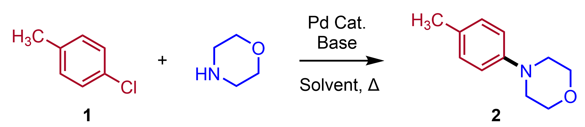

As introduced in the previous TLC homework, thin-layer chromatography (TLC) is one of the most common tools chemists use to quickly judge reaction progress and to select a suitable eluent for purification. In practice, chemists often adjust the eluent composition iteratively until the target product appears in a useful Rf window and is sufficiently separated from reactants or byproducts. In previous homework, you studied how molecular structure and solvent composition affect Rf values, and you used a model to predict TLC behavior.
In this homework, you will go one step further: you will build a multi-agent application that mimics how a chemist reasons about TLC optimization. Since you don't have a TLC experiment setup in hand, we use the model trained in previous homework as a TLC emulator (模拟器) to obtain experimental TLC Rf value of a given molecule and eluent composition. The application will accept a reaction SMILES (e.g., CC(=O)O.CCO>>CC(=O)OCC), identify reactants and products, and then use three cooperating agents to iteratively search for a better TLC eluent composition.
To keep the homework manageable, use the following assumptions:
You may ignore catalysts, solvents, and reagents that are not part of the main organic transformation.
You may use a binary eluent system such as hexane / ethyl acetate, and the two solvent fractions should sum to 100%.
Implement the following three agents using an LLM API.
你可以考虑使用阿里云的大模型平台，会提供一些免费的token
也可以用使用https://api.v36.cm/，这个上面什么模型都有，应该注册会送一些token，也不妨充值10块钱，对于我们的作业而言，基本上花不了多少钱
至少使用gpt-4o-mini或者更强的模型
You can find the examples system prompts for the following agents in the provided "agent_prompts.yaml" file.
This agent reads the current TLC experiment result and explains: 1) what the current TLC result implies chemically and 2) decide whether separation is good enough.
This agent proposes the next eluent composition to try based on results given by Explanation Agent and TLC principles. Its job is to reason about how changing solvent polarity will influence Rf values and separation. For example:
if the product Rf is too low, the agent may increase eluent polarity;
if the product Rf is too high, the agent may decrease eluent polarity;
if the product and a reactant are too close, the agent should try to improve separation by adjusting composition.
This agent should output the next candidate eluent composition.
First, the TLC simulation model uses the proposed eluent composition to emulate the experiment under the proposed eluent composition. This agent gets the simulated TLC results, then assembles the results into a natural language form, which is used for sending to Explanation Agent.
Your system should run in a loop like this:
User send a task request to separate product using TLC.
Run the Explanation Agent to interpret the results (if it is first iteration, receiving user task description prompt to start)
Run the Composition Tuning Agent to propose a better composition.
Run the Experimentation Agent to simulate TLC.
Go to step 2 and repeat until the stopping criterion is satisfied or the maximum iteration number is reached.
Let's use the same examples as in the previous homework. But now, you have to let the agents find the optimal eluent.
Eluent criteria: in order to have a good separation performance of a mixture, we need to find a suitable eluent composition that the Rf value of the product is within 0.2~0.3, and other reactants should have Rf value difference >0.1 compared to target compound.
Consider the following two widely used reactions in drug synthesis, we would like separate the product from the reaction crude.
Buchwald-Hartwig cross-coupling reaction
Assume the reaction crude (mixture after the reaction) only contains reactant 1 and product 2. Find the right the eluent composition to separate 2 from 1 (for simplicity, you can just input the 1>>2 as reaction SMILES)

Reference: https://en.wikipedia.org/wiki/Buchwald%E2%80%93Hartwig_amination
If you don't have ChemDraw software installed, you can use the online molecular drawing tool to draw molecule and obtain its SMILES.
https://www.rcsb.org/chemical-sketch
https://molview.org/ ---- Draw the molecule, then click "Tools-->Information Card"
Note: 本作业提供了比较详细的样本代码，考虑从基本代码做起